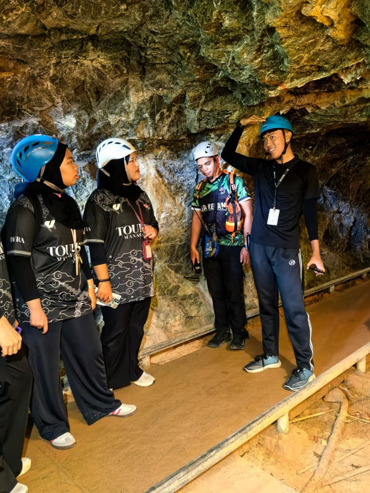

Sentiasa belajar perkara baharu berkaitan perhutanan.
Memperkenalkan gua kelam 2 kepada pelancong kerana kebanyakan pelancong masih tidak mengetahui kewujudan gua kelam 2.
Menjadikan gua kelam tersenarai dalam "Book of Records" kerana berjaya membina bendera terpanjang di dalam gua kelam tersebut.
